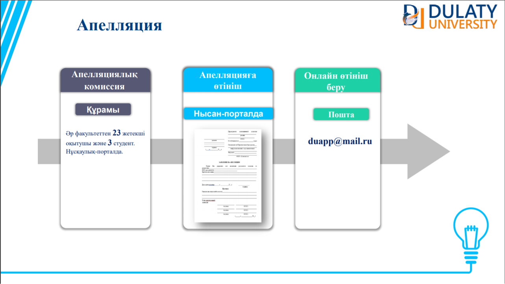
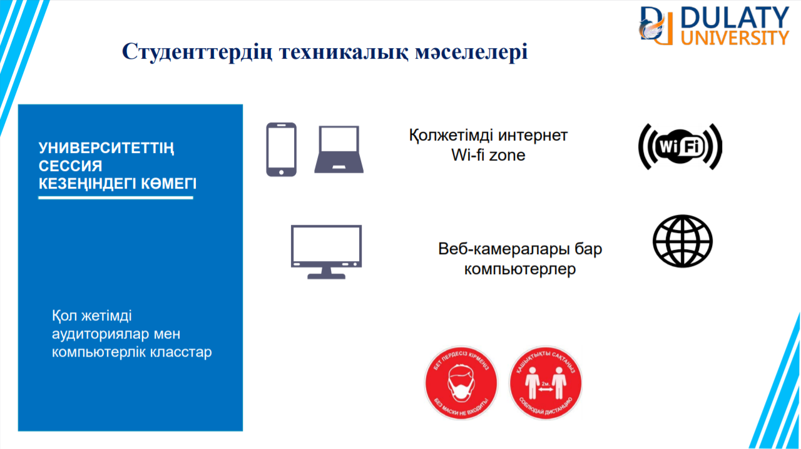
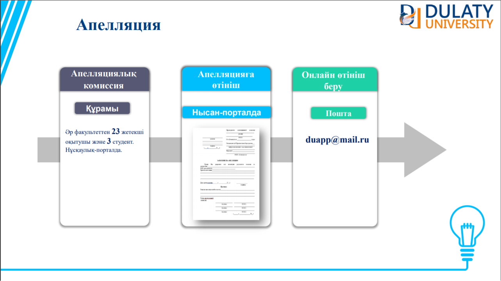
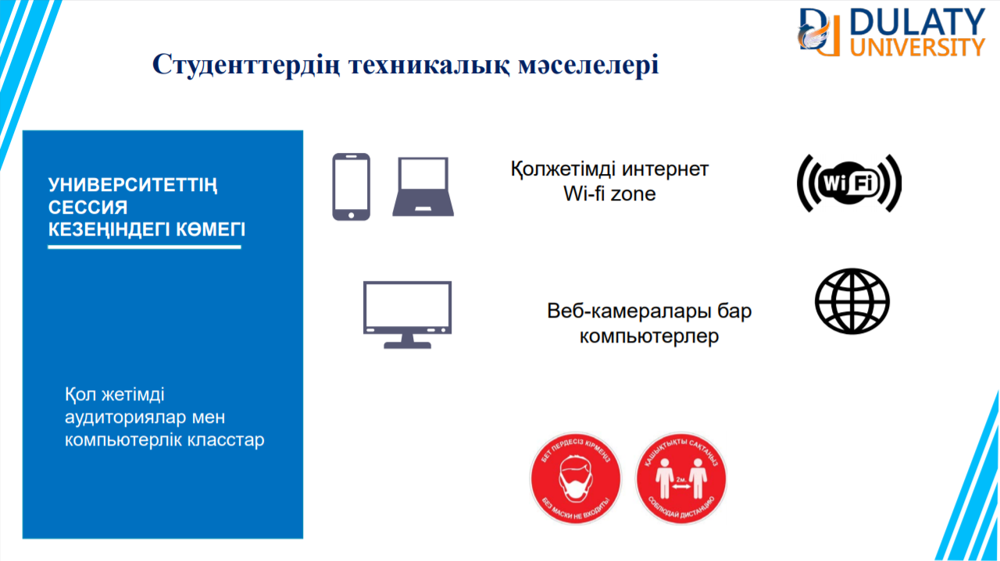

|
Объявления
ВНИМАНИЮ СТУДЕНТОВ! Чтобы скачать материалы и задачи через портал студента, необходимо изучить инструкцию очистки файла Cookie браузера Google Chrome и инструкцию по работе с порталом. Если вы не смогли скачать файл, на компьютер необходимо установить один из архиваторов Winrar или Zip и Microsoft Office. СТУДЕНТТЕР НАЗАРЫНА! Оқытушылар жүктеген тапсырмаларды және материалдарды портал арқылы өзіңізге жүктеп алу үшін Cookie файлын тазалау туралы нұсқаулықты және порталмен жұмыс істеу жөніндегі нұсқаулығынын орындауыңыз керек. Егер тапсырмаларды жүктеп ала алмасаңыз компьютеріңізде Winrar немесе Zip архиваторларының бірін және Microsoft Office-ті орнатуларыңыз керек.
|
 


